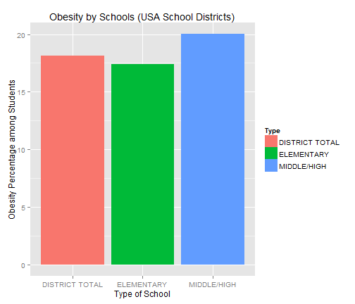

- What is BMI?
- Interpret Your BMI? (School Children Example)
- Why Monitor your BMI?
BMI Presentation
The Importance of Monitoring your Health Parameters
Paul Tallon
Coursera Student (Developing Data Products)
Agenda for this Presentation
What is BMI?
- Formula based on height and weight
- Metric units: $\frac{Weight}{Height^2}$, or if using Imperial units: $\frac{Weight}{Height^2}\times 703$
- Pediatric factors
- gender taken into account
- compare with other children of a similar age
- Easy to interpret single value
- Compare with others
- Monitor changes over time
- Shiny BMI Calculator
- Fill in basic data
Interpret Your BMI? (School Example)
Here's an R-generated Chart showing BMI data for different schools
Source: http://health.data.ny.gov/api/views/es3k-2aus/rows.csv

Why Monitor Your BMI?
- Rising obesity epidemic
- Foretells other health issues
- Start at an early age